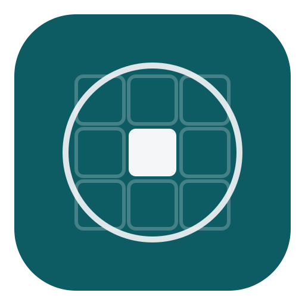

九宫格数据矩阵 + 实心命中格 + 定位环。深孔雀石绿底、冷白前景，没有多余彩色： 一眼是"在一堆格子里找到那一条"，与透视表计数格下钻的交互直接对应。

src-tauri/icons/ 下的 32x32.png / 128x128.png / 128x128@2x.png / icon.png / icon.ico；
源文件保留在 docs/icon-drafts/concept-a-target.svg，后续改图后重跑
npx tauri icon docs/icon-drafts/concept-a-target.svg 即可。
深色底预览对应 Windows 深色任务栏，浅色底对应浅色任务栏；两种底色下中心格与定位环都有足够对比。
图标为 512×512 矢量稿，四角透明（圆角外不填充），与 Windows 11 的应用图标规范一致。